视频
课程
Python 学习中的两大法宝函数（当然也可以用在 PyTorch）
1 from torch.utils.data import Dataset
PyTorch 加载数据初认识
Pytorch 有两个类:
Dataset: 提供一种方式去获取数据及其标签
如何获取每一个数据及其标签
告诉我们总共有多少数据
Dataloader: 为后面的网络提供不同的数据形式
Dataset 类代码实战
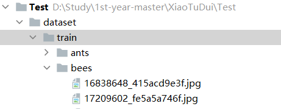
下载了数据包，是一个蚂蚁和蜜蜂的二分类问题。训练集根目录为 dataset/train，标签有 ants 和 bees。
设计一个类 MyData，负责读取数据集：
1 2 3 4 5 6 7 8 9 10 11 12 13 14 15 16 17 18 19 20 21 22 23 24 25 26 27 28 29 30 31 32 33 34 35 36 37 38 from torch.utils.data import Datasetfrom PIL import Imageimport osclass MyData (Dataset ):def __init__ (self, root_dir, label_dir ):""" 初始化 :param root_dir: 根目录 :param label_dir: 标签目录 """ self .root_dir = root_dirself .label_dir = label_dirself .path = os.path.join(self .root_dir, self .label_dir)self .img_path = os.listdir(self .path)def __getitem__ (self, idx ):""" 获取对象 :param idx: 索引 :return: """ self .img_path[idx]self .root_dir, self .label_dir, img_name)open (img_item_path)self .label_dirreturn img, labeldef __len__ (self ):return len (self .img_path)"dataset/train" "ants" "bees"
TensorBoard 的使用（一）
使用 pytorch 的 tensorboard 在网页端显示函数图像 y = 2 x y=2x y = 2 x
1 2 3 4 5 6 7 8 from torch.utils.tensorboard import SummaryWriter"logs" )for i in range (100 ):"y=2x" , 2 * i, i)
在 shell 端口中 tensorboard --logdir=logs：（启动 tensorboard，logdir 目录为 logs）
1 2 3 PS D:\Study\1st-year-master\XiaoTuDui\Test> tensorboard --logdir=logs
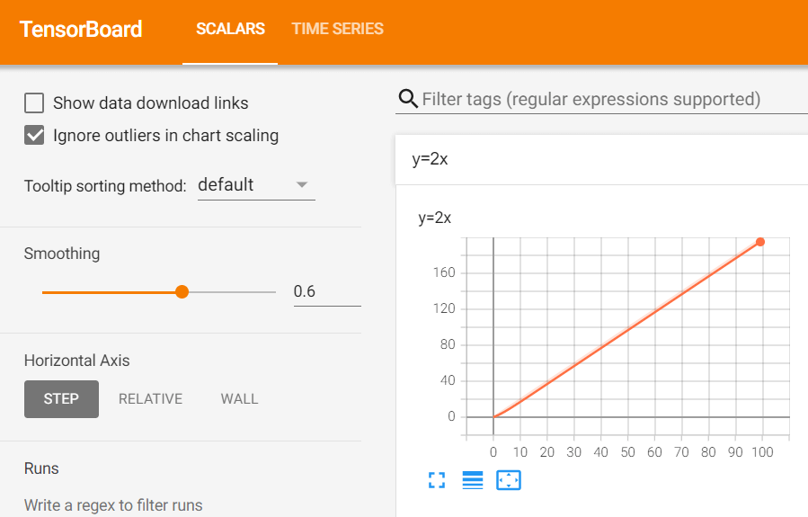
如果两段 writer.add_scalar 名称相同，可能会出现一张图像混合形成两张图像的情况，可以考虑清除项目中 logs/ 的缓存刷新。
TensorBoard 的使用（二）
主要讲了 writer.add_image 的用法。
def add_image(
self, tag, img_tensor, global_step=None, walltime=None, dataformats="CHW"
):
"""Add image data to summary.
Note that this requires the ``pillow`` package.
Args:
tag (str): Data identifier
img_tensor (torch.Tensor, numpy.ndarray, or string/blobname): Image data
global_step (int): Global step value to record
walltime (float): Optional override default walltime (time.time())
seconds after epoch of event
dataformats (str): Image data format specification of the form
CHW, HWC, HW, WH, etc.
Shape:
img_tensor: Default is :math:`(3, H, W)`. You can use ``torchvision.utils.make_grid()`` to
convert a batch of tensor into 3xHxW format or call ``add_images`` and let us do the job.
Tensor with :math:`(1, H, W)`, :math:`(H, W)`, :math:`(H, W, 3)` is also suitable as long as
corresponding ``dataformats`` argument is passed, e.g. ``CHW``, ``HWC``, ``HW``.
Examples::
from torch.utils.tensorboard import SummaryWriter
import numpy as np
img = np.zeros((3, 100, 100))
img[0] = np.arange(0, 10000).reshape(100, 100) / 10000
img[1] = 1 - np.arange(0, 10000).reshape(100, 100) / 10000
img_HWC = np.zeros((100, 100, 3))
img_HWC[:, :, 0] = np.arange(0, 10000).reshape(100, 100) / 10000
img_HWC[:, :, 1] = 1 - np.arange(0, 10000).reshape(100, 100) / 10000
writer = SummaryWriter()
writer.add_image('my_image', img, 0)
# If you have non-default dimension setting, set the dataformats argument.
writer.add_image('my_image_HWC', img_HWC, 0, dataformats='HWC')
writer.close()
Expected result:
.. image:: _static/img/tensorboard/add_image.png
:scale: 50%
"""
从 PIL 到 numpy，需要在 add_image() 中指定 shape 中每一个数字/维表示的含义。dataformats="HWC"（高、宽、通道数）
1 2 3 4 5 6 7 8 9 10 11 12 13 14 15 16 from torch.utils.tensorboard import SummaryWriterimport numpy as npfrom PIL import Image"logs" )r"dataset\train\ants\0013035.jpg" open (image_path)print (type (img_array))print (img_array.shape)"test" , img_array, 2 , dataformats="HWC" )for i in range (100 ):"y=2x" , 2 * i, i)
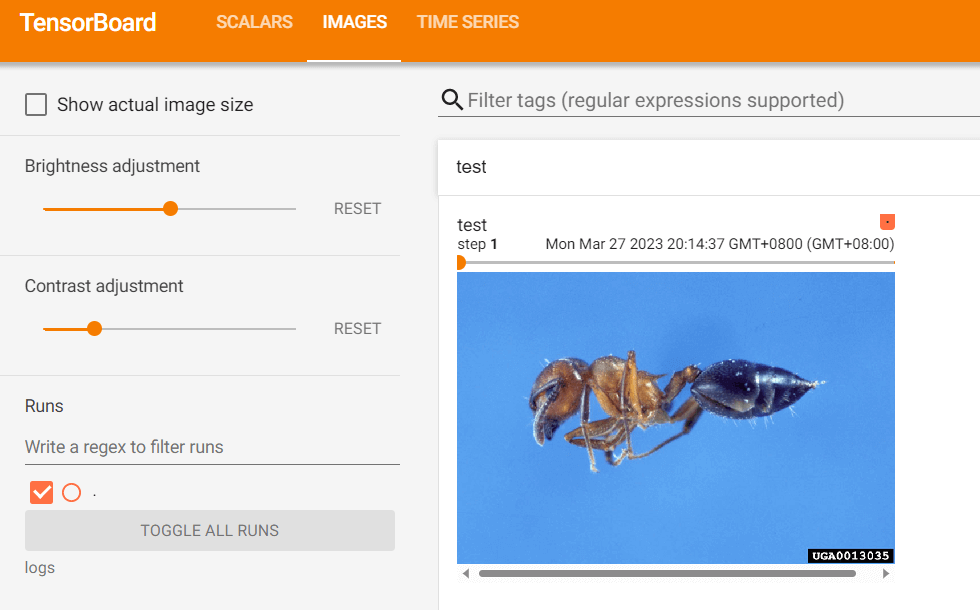
transforms 是一个工具包，读入图片经过 transforms 后产生结果。
如 transforms.ToTensor() 将 Image 格式转换成 tensor 格式。
1 2 3 4 5 6 7 8 9 10 11 12 13 14 15 16 17 18 from torchvision import transformsfrom PIL import Imagefrom torch.utils.tensorboard import SummaryWriterr"dataset/train/ants/0013035.jpg" open (img_path)"logs" )print (tensor_img)"Tensor_img" , tensor_img)
讲了 transforms.Normalize 的用法。
1 2 3 4 5 6 7 8 9 10 11 12 13 14 15 16 17 class Normalize(torch.nn.Module):
1 2 3 4 5 6 7 8 9 10 11 12 13 14 15 16 17 18 19 from PIL import Imagefrom torch.utils.tensorboard import SummaryWriterfrom torchvision import transforms"logs" )open ("images/pytorch.png" )print (img)"ToTensor" , img_tensor)print (img_tensor[0 ][0 ][0 ])6 , 3 , 2 ], [9 , 3 , 5 ])print (img_norm[0 ][0 ][0 ])"Normalize" , img_norm, 1 )
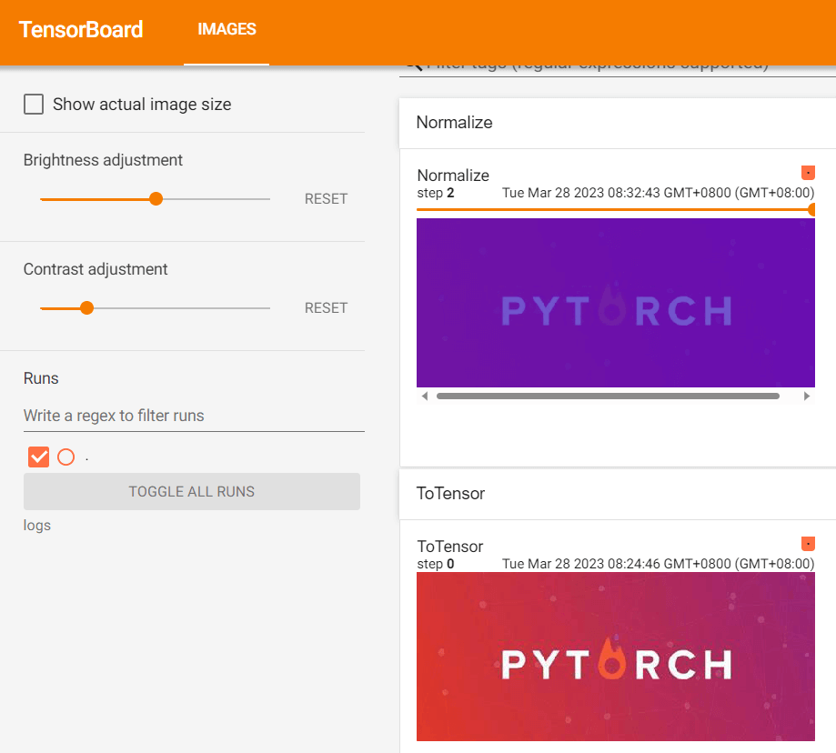
Resize 调整图像大小。
1 2 3 4 5 6 7 8 9 print (img.size)512 , 512 ))"Resize" , img_resize, 0 )print (img_resize)
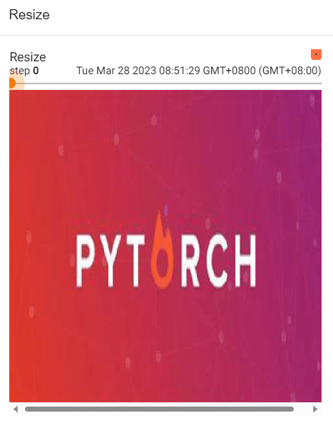
Compose: 将transforms列表里面的transform操作进行遍历。
1 2 3 4 5 6 7 8 9 10 11 12 13 14 15 16 17 18 19 20 21 22 23 24 25 26 27 class Compose:
1 2 3 4 5 6 512 )"Resize" , img_resize_2, 1 )
相当于先缩放 trans_resize_2，再转换成 tensor 类型 trans_totensor。
RandomCrop 随机裁剪
1 2 3 4 5 6 32 , 64 ])for i in range (10 ):"RandomCropHW" , img_crop, i)
torchvision 中的数据集使用
在官网上查看 torchvision.datasets 的用法
选用 CIFAR10 数据集，读入 train_set 和 test_set：
1 2 train_set = torchvision.datasets.CIFAR10(root="./dataset" , train=True , transform=dataset_transform, download=True )"./dataset" , train=False , transform=dataset_transform, download=True )
如果选择 download=True，会检查并验证 root 中是否存在数据集且是否完整，若没有，则会下载：
1 2 3 C:\Users\gzjzx\anaconda3\python.exe D:/Study/1st-year-master/XiaoTuDui/Test/P10_dataset_transform.py
可以将网址 https://www.cs.toronto.edu/~kriz/cifar-10-python.tar.gz 复制到迅雷中由训练代下载，速度会快，将下载好的数据库拷贝回去。
1 2 3 Using downloaded and verified file: ./dataset\cifar-10-python.tar.gz
根据官网 CIFAR-10 and CIFAR-100 datasets (toronto.edu) 对数据库的描述，查看数据信息：
1 2 3 4 5 6 7 8 9 10 11 12 13 14 15 16 17 print (test_set[0 ])print (test_set.classes)0 ]print (img)print (target)print (test_set.classes[target])print (test_set[0 ])"p10" )for i in range (10 ):"test_set" , img, i)
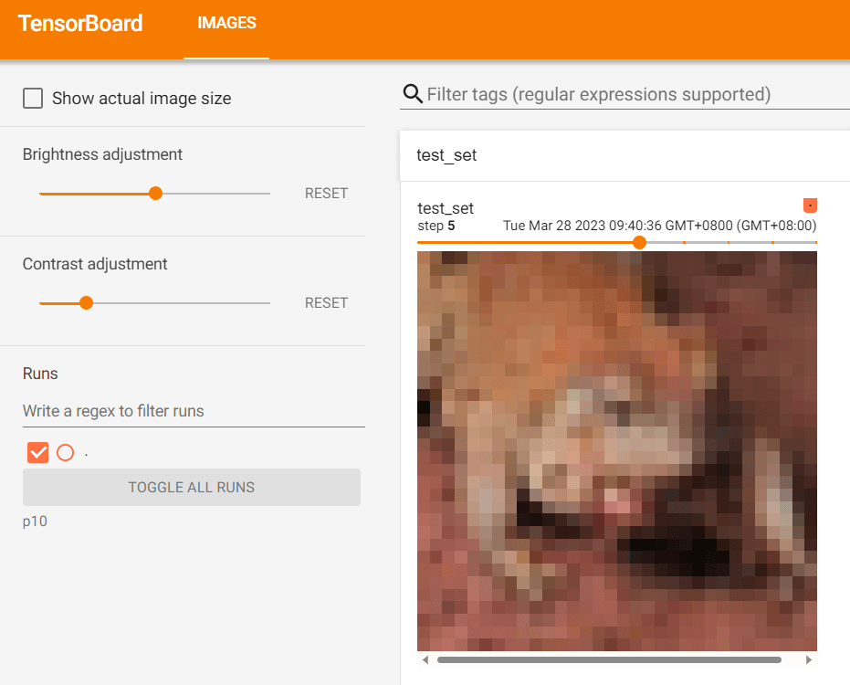
DataLoader 的使用
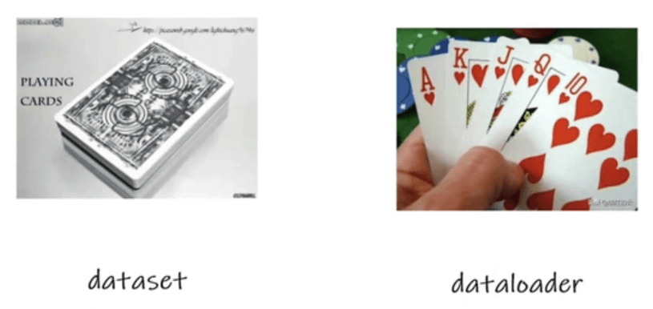
Pytorch 有两个类:
Dataset: 提供一种方式去获取数据及其标签
如何获取每一个数据及其标签
告诉我们总共有多少数据
DataLoader: 为后面的网络提供不同的数据形式
DataLoader 的使用：
1 2 3 4 5 6 7 8 9 10 11 12 13 14 15 16 17 18 19 20 21 22 23 24 25 import torchvisionfrom torch.utils.data import DataLoaderfrom torch.utils.tensorboard import SummaryWriter"./dataset" , train=False , transform=torchvision.transforms.ToTensor())4 , shuffle=True , num_workers=0 , drop_last=False )0 ]print (img.shape)print (target)"dataloader" )0 for data in test_loader:"test_data" , imgs, step)1
test_loader = DataLoader(dataset=test_data, batch_size=4, shuffle=True, num_workers=0, drop_last=False)
dataset=test_data，读入 test_data 的数据集batch_size=4，每次读入 4 张图片shuffle=True，打乱图片顺序drop_last=False，数据集数量如果不能被 batch_size 整除，要丢弃最后一块吗？否
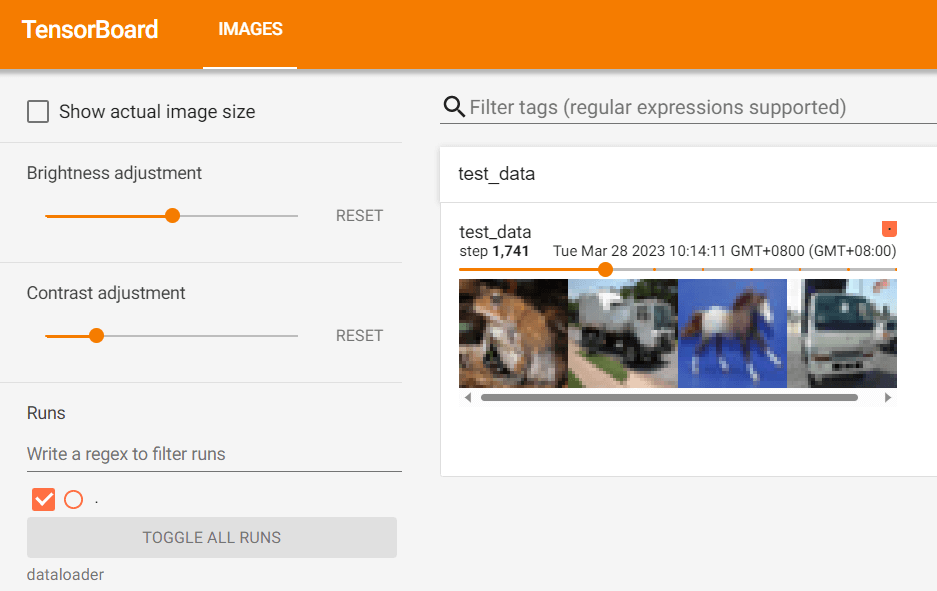
神经网络的基本骨架-nn.Module的使用
查看帮助文档：
对于神经网络的前向传播，input-forward-output, 自行设计一个神经网络的类，继承 nn.Moudle：初始化时，super(Model, self).__init__()
1 2 3 4 5 6 7 8 9 10 11 12 import torch.nn as nnimport torch.nn.functional as Fclass Model (nn.Module):def __init__ (self ):super (Model, self ).__init__()self .conv1 = nn.Conv2d(1 , 20 , 5 )self .conv2 = nn.Conv2d(20 , 20 , 5 )def forward (self, x ):self .conv1(x))return F.relu(self .conv2(x))
设计一个最简单的函数，让 output 为 input 的加 1：
1 2 3 4 5 6 7 8 9 10 11 12 13 14 15 import torchfrom torch import nnclass MyClass (nn.Module):def __init__ (self ):super ().__init__()def forward (self, input ):input + 1 return outputinput = torch.tensor(1.0 )input )print (output)
土堆说卷积操作（可选看）
大概讲了卷积操作 torch.nn.functional.conv2d，stride 和 padding 的含义。
1 2 3 4 5 6 7 8 9 10 11 12 13 14 15 16 17 18 19 20 21 22 23 24 25 26 27 import torchimport torch.nn.functional as Finput = torch.tensor([[1 , 2 , 0 , 3 , 1 ],0 , 1 , 2 , 3 , 1 ],1 , 2 , 1 , 0 , 0 ],5 , 2 , 3 , 1 , 1 ],2 , 1 , 0 , 1 , 1 ]])1 , 2 , 1 ],0 , 1 , 0 ],2 , 1 , 0 ]])input = torch.reshape(input , (1 , 1 , 5 , 5 ))1 , 1 , 3 , 3 ))print (input .shape)print (kernel.shape)input , kernel, stride=1 )print (output)input , kernel, stride=2 )print (output2)input , kernel, stride=1 , padding=1 )print (output3)
1 2 3 4 5 6 7 8 9 10 11 12 torch.Size([1, 1, 5, 5])
神经网络-卷积层
官方文档：
torch.nn.Conv2d(in_channels, out_channels, kernel_size, stride=1, padding=0, dilation=1, groups=1, bias=True, padding_mode='zeros', device=None, dtype=None)：
in_channels (int out_channels (int kernel_size (int or tuple stride (int or tuple , optional ) – Stride of the convolution. Default: 1padding (int , tuple or str , optional ) – Padding added to all four sides of the input. Default: 0
较少用：
padding_mode (str , optional ) – 'zeros', 'reflect', 'replicate' or 'circular'. Default: 'zeros'dilation (int or tuple , optional ) – Spacing between kernel elements. Default: 1 内核元素之间的间距。默认值：1groups (int , optional ) – Number of blocked connections from input channels to output channels. Default: 1 从输入通道到输出通道的阻塞连接数。默认值：1bias (bool , optional ) – If True, adds a learnable bias to the output. Default: True 如果为“True”，则在输出中添加可学习的偏差。
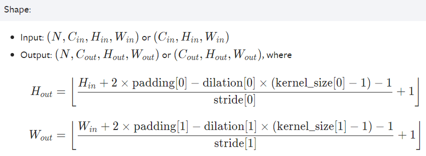
输入/输出的大小计算公式，如果看论文时论文没有阐明，可以用这个公式推断出具体的参数。
导入相关库：
1 2 3 4 5 6 7 8 9 10 11 12 import torchimport torchvisionfrom torch import nnfrom torch.nn import Conv2dfrom torch.utils.data import DataLoaderfrom torch.utils.tensorboard import SummaryWriter"./dataset" ,False ,True )64 )
设计卷积神经网络结构：
1 2 3 4 5 6 7 8 9 10 11 12 class MyClass (nn.Module):def __init__ (self ):super (MyClass, self ).__init__()self .conv1 = Conv2d(in_channels=3 , out_channels=6 , kernel_size=3 , stride=1 , padding=0 )def forward (self, x ):self .conv1(x)return xprint (myClass)
执行操作并输出到 Tensorboard 上：
1 2 3 4 5 6 7 8 9 10 11 12 13 writer = SummaryWriter("./logs" )0 for data in dataloader:print (imgs.shape)print (output.shape)"input" , imgs, step)1 , 3 , 30 , 30 ))"output" , output, step)1
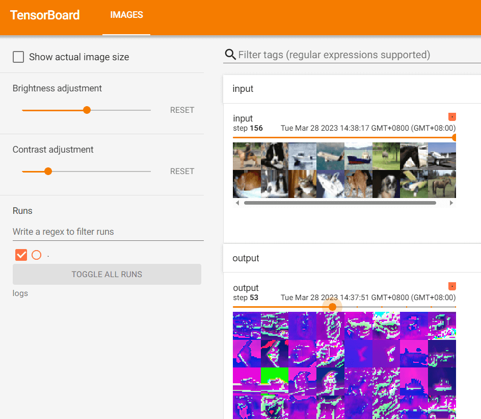
神经网络-最大池化的使用
Max-pooling 是 下采样的一种。
官方文档：
torch.nn.MaxPool2d(kernel_size, stride=None, padding=0, dilation=1, return_indices=False, ceil_mode=False)：
kernel_size (Union [ int , Tuple [ int , int ]**] ) – the size of the window to take a max over 要放大的窗口的大小stride (Union [ int , Tuple [ int , int ]**] ) – the stride of the window. Default value is kernel_size 窗户的跨步padding (Union [ int , Tuple [ int , int ]**] ) – Implicit negative infinity padding to be added on both sides 要在两侧添加的隐式负无穷大填充dilation (Union [ int , Tuple [ int , int ]**] ) – a parameter that controls the stride of elements in the window 一个参数，用于控制窗口中元素的步幅return_indices (bool True, will return the max indices along with the outputs. Useful for torch.nn.MaxUnpool2dceil_mode (bool
1 2 3 4 5 6 7 8 9 10 11 12 13 14 15 16 17 18 19 20 21 22 23 24 25 26 27 28 29 30 31 32 33 34 35 36 37 38 39 40 41 42 43 44 45 import torchimport torchvisionfrom torch import nnfrom torch.nn import MaxPool2dfrom torch.utils.data import DataLoaderfrom torch.utils.tensorboard import SummaryWriter"./dataset" ,False ,True )64 )input = torch.tensor([[1 , 2 , 0 , 3 , 1 ],0 , 1 , 2 , 3 , 1 ],1 , 2 , 1 , 0 , 0 ],5 , 2 , 3 , 1 , 1 ],2 , 1 , 0 , 1 , 1 ]], dtype=torch.float32)input , (-1 , 1 , 5 , 5 ))print (input .shape)class MyClass (nn.Module):def __init__ (self ):super (MyClass, self ).__init__()self .maxpool1 = MaxPool2d(kernel_size=3 , ceil_mode=False )def forward (self, input ):self .maxpool1(input )return output"./logs_maxpool" )0 for data in dataloader:"input" , imgs, step)"output" , output, step)1
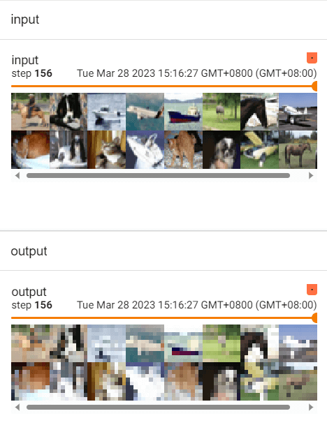
神经网络-非线性激活
官方文档：
1 2 3 4 5 6 7 8 9 10 11 12 13 14 15 16 17 18 19 20 21 22 23 24 25 26 27 28 29 30 31 32 33 34 35 36 37 38 39 40 41 import torchimport torchvisionfrom torch import nnfrom torch.nn import ReLUfrom torch.utils.data import DataLoaderfrom torch.utils.tensorboard import SummaryWriterinput = torch.tensor([[1 , -0.5 ],1 , 3 ]])input = torch.reshape(input , (-1 , 1 , 2 , 2 )) print (input .shape)"./dataset" , train=False , download=True ,64 )class MyClass (nn.Module):def __init__ (self ):super (MyClass, self ).__init__()self .relu1 = ReLU()def forward (self, input ):self .relu1(input )return output"./logs_relu" )0 for data in dataloader:"inputs" , imgs, global_step=step)"output" , output, step)1
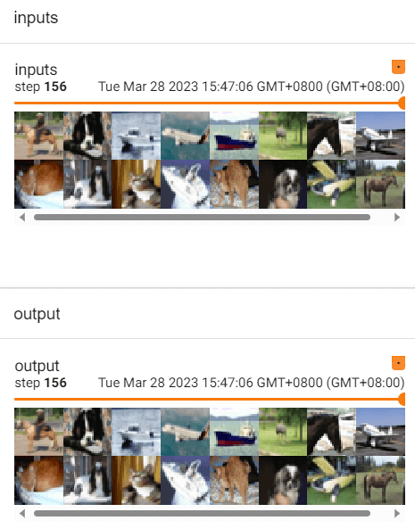
神经网络-线性层及其他层介绍
1 2 3 4 5 6 7 8 9 10 11 12 13 14 15 16 17 18 19 20 21 22 23 24 25 26 27 28 29 30 31 32 import torchimport torchvisionfrom torch import nnfrom torch.nn import Linearfrom torch.utils.data import DataLoader"./dataset" , train=False , transform=torchvision.transforms.ToTensor(),True )64 )class MyClass (nn.Module):def __init__ (self ):super (MyClass, self ).__init__()self .linear1 = Linear(196608 , 10 )def forward (self, input ):self .linear1(input )return outputfor data in dataloader:print (imgs.shape)print (output.shape)print (output.shape)
从 torch.nn — PyTorch 2.0 documentation 获取更多神经网络架构。
也可从 Search — Torchvision 0.15 documentation (pytorch.org) 或 Models and pre-trained weights — Torchvision 0.15 documentation (pytorch.org) 获取经典神经网络模型。
神经网络-搭建小实战和 Sequential 的使用
使用 Sequential() 将多个神经网络架构整合成一个。
整合如下神经网络：
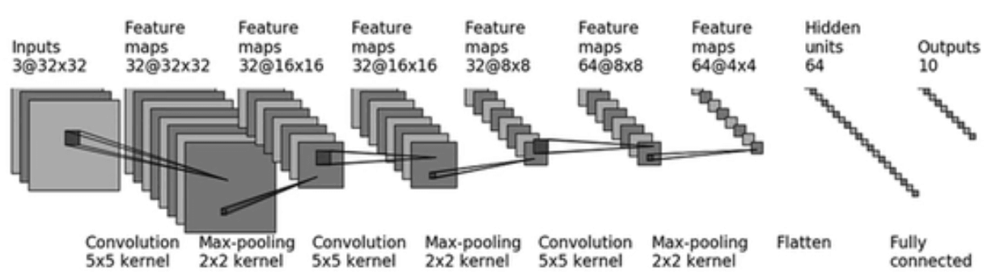
1 2 3 4 5 6 7 8 9 10 11 12 13 14 15 16 17 18 19 20 21 22 23 24 25 26 27 28 29 30 31 32 33 34 import torchfrom torch import nnfrom torch.nn import Conv2d, MaxPool2d, Flatten, Linear, Sequentialfrom torch.utils.tensorboard import SummaryWriterclass MyClass (nn.Module):def __init__ (self ):super (MyClass, self ).__init__()self .model1 = Sequential(3 , 32 , 5 , padding=2 ),2 ),32 , 32 , 5 , padding=2 ),2 ),32 , 64 , 5 , padding=2 ),2 ),1024 , 64 ),64 , 10 )def forward (self, x ):self .model1(x)return xprint (myClass)input = torch.ones((64 , 3 , 32 , 32 ))input )print (output.shape)'../logs_seq' )input )
在 SummaryWriter() 中显示完整架构。
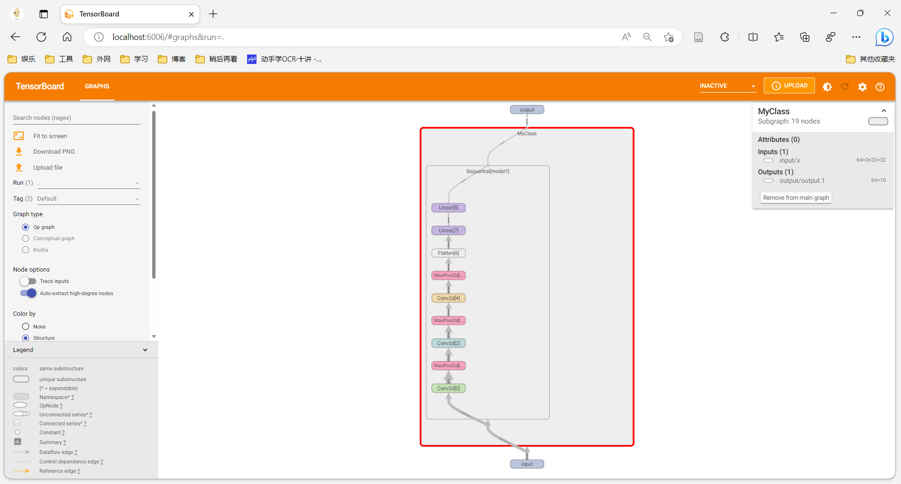
损失函数与反向传播
pytorch 中内置了很多损失函数。Search — PyTorch 2.0 documentation
L1Loss()、MSELoss()、CrossEntropyLoss()
1 2 3 4 5 6 7 8 9 10 11 12 13 14 15 16 17 18 19 20 21 22 23 24 import torchfrom torch import nnfrom torch.nn import L1Loss, MSELoss1 , 2 , 3 ], dtype=torch.float32)1 , 2 , 5 ], dtype=torch.float32)1 , 1 , 1 , 3 ))1 , 1 , 1 , 3 ))print (result, result_mse)0.1 , 0.2 , 0.3 ])1 ])1 , 3 ))print (result_cross)
对损失函数进行反向传播可以得到模型中各个参数的梯度。result_loss.backward()。
1 2 3 4 5 6 7 8 9 10 11 12 13 14 15 16 17 18 19 20 21 22 23 24 25 26 27 28 29 30 31 32 33 34 35 36 37 38 39 40 41 42 43 import torchimport torchvisionfrom torch import nnfrom torch.nn import Conv2d, MaxPool2d, Flatten, Linear, Sequentialfrom torch.utils.data import DataLoaderfrom torch.utils.tensorboard import SummaryWriter"../dataset" , train=False , transform=torchvision.transforms.ToTensor(),True )1 )class MyClass (nn.Module):def __init__ (self ):super (MyClass, self ).__init__()self .model1 = Sequential(3 , 32 , 5 , padding=2 ),2 ),32 , 32 , 5 , padding=2 ),2 ),32 , 64 , 5 , padding=2 ),2 ),1024 , 64 ),64 , 10 )def forward (self, x ):self .model1(x)return xfor data in dataloader:print (outputs)print (targets)print (result_loss)
优化器
官方文档：
1 2 3 4 5 6 7 8 9 10 11 12 13 14 loss = nn.CrossEntropyLoss()0.01 )for epoch in range (20 ):0.0 for data in dataloader:print (running_loss)
以最基本的随机梯度下降为例：optim = torch.optim.SGD(myClass.parameters(), lr=0.01)
，读入模型参数，然后读入学习率。
嵌套在for epoch in range(20): 进行多轮参数优化。
每次梯度下降都要清零梯度：optim.zero_grad()
计算出新的梯度：result_loss.backward()
更新模型参数：optim.step()
一般而言，每轮迭代会让损失函数值变小。
现有网络模型的使用及修改
从官网 Models and pre-trained weights — Torchvision 0.15 documentation (pytorch.org) 中可以获得流行的模型以及 pretrain 后的模型。
初始化 vgg-16 模型，参数不变：vgg16_false = torchvision.models.vgg16(pretrained=False)
初始化 vgg-16 模型，并从官网上下载经过预训练后的参数：vgg16_true = torchvision.models.vgg16(pretrained=True)
在现有模型后追加层：vgg16_true.add_module('add_linear', nn.Linear(1000, 10))
在现有模型后更改层：vgg16_false.classifier[6] = nn.Linear(4096, 10)
完整的模型训练套路（一）
单独建一个 model.py 文件，用于定义模型：
1 2 3 4 5 6 7 8 9 10 11 12 13 14 15 16 17 18 19 20 21 22 23 24 25 26 27 28 29 30 import torchfrom torch import nnclass MyClass (nn.Module):def __init__ (self ):super (MyClass, self ).__init__()self .model = nn.Sequential(3 , 32 , 5 , padding=2 ),2 ),32 , 32 , 5 , padding=2 ),2 ),32 , 64 , 5 , padding=2 ),2 ),1024 , 64 ),64 , 10 )def forward (self, x ):self .model(x)return xif __name__ == '__main__' :input = torch.ones((64 , 3 , 32 , 32 ))input )print (output.shape)
在 train.py 中，设置损失函数，优化器，训练轮次等训练神经网络：
1 2 3 4 5 6 7 8 9 10 11 12 13 14 15 16 17 18 19 20 21 22 23 24 25 26 27 28 29 30 31 32 33 34 35 36 37 38 39 40 41 42 43 44 45 46 47 48 49 50 51 from model import *import torchvisionfrom torch import nnfrom torch.utils.data import DataLoader'../dataset' , train=True , transform=torchvision.transforms.ToTensor(),True )'../dataset' , train=False , transform=torchvision.transforms.ToTensor(),True )len (train_data)len (test_data)print ('训练数据集的长度为:{}' .format (train_data_size))print ('测试数据集的长度为:{}' .format (test_data_size))64 )64 )1e-2 0 0 10 for i in range (epoch):print ('第 {} 轮训练开始' .format (i + 1 ))for data in train_dataloader:1 print ('训练次数: {}, Loss: {}' .format (total_train_step, loss.item()))
完整的模型训练套路（二）（三）
1 2 3 4 5 6 7 8 9 10 11 12 13 14 15 16 17 18 19 20 21 22 23 24 25 26 27 28 29 30 31 32 33 34 35 36 37 38 39 40 41 42 43 44 45 46 47 48 49 50 51 52 53 54 55 56 57 58 59 60 61 62 63 64 65 66 67 68 69 70 71 72 73 74 75 76 77 78 79 80 81 82 83 84 from torch.utils.tensorboard import SummaryWriterfrom model import *import torchvisionfrom torch import nnfrom torch.utils.data import DataLoader'../dataset' , train=True , transform=torchvision.transforms.ToTensor(),True )'../dataset' , train=False , transform=torchvision.transforms.ToTensor(),True )len (train_data)len (test_data)print ('训练数据集的长度为:{}' .format (train_data_size))print ('测试数据集的长度为:{}' .format (test_data_size))64 )64 )1e-2 0 0 10 '../logs_train' )for i in range (epoch):print ('第 {} 轮训练开始' .format (i + 1 ))for data in train_dataloader:1 if total_train_step % 100 == 0 :print ('训练次数: {}, Loss: {}' .format (total_train_step, loss.item()))'train_loss' , loss.item(), total_train_step)eval ()0 0 with torch.no_grad():for data in test_dataloader:1 ) == targets).sum ()print ('整体测试集上的 Loss: {}' .format (total_test_loss))print ('整体测试集上的正确率: {}' .format (total_accuracy / test_data_size))'test_loss' , total_test_loss, total_test_step)'total_accuracy' , total_accuracy / test_data_size, total_test_step)1 "myClass_{}.pth" .format (i))print ("模型已保存" )
将模型调整为 train / eval 模式：myClass.train()、myClass.eval()，该调整对 Dropout 和 BatchNorm 等架构有效。
测试步骤（不更新参数，不计算梯度，可以节约内存）： with torch.no_grad():
输出每轮次的损失函数的值：
1 2 if total_train_step % 100 == 0 :print ('训练次数: {}, Loss: {}' .format (total_train_step, loss.item()))
计算正确率：
1 2 accuracy = (outputs.argmax(1 ) == targets).sum ()
使用 SummaryWriter 可视化训练过程：
writer.add_scalar('train_loss', loss.item(), total_train_step)writer.add_scalar('test_loss', total_test_loss, total_test_step)writer.add_scalar('total_accuracy', total_accuracy / test_data_size, total_test_step)
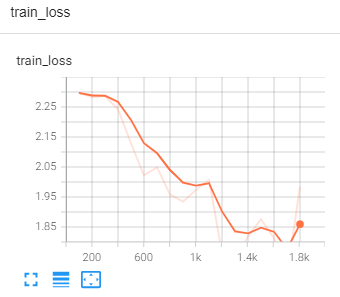
保存每轮次训练出的模型：
1 2 3 torch.save(myClass, "myClass_{}.pth" .format (i))print ("模型已保存" )
利用 GPU 训练（一）
网络模型可以使用 cuda：
1 2 3 if torch.cuda.is_available():
损失函数可以使用 cuda：
1 2 3 4 if torch.cuda.is_available():
优化器不可以。
测试集、数据集数据可以使用 cuda：
1 2 3 4 5 for data in train_dataloader:if torch.cuda.is_available():
1 2 3 4 5 for data in test_dataloader:if torch.cuda.is_available():
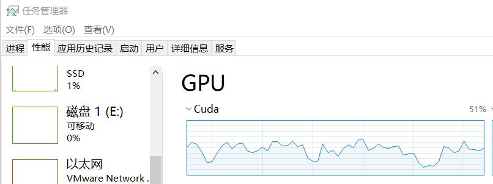
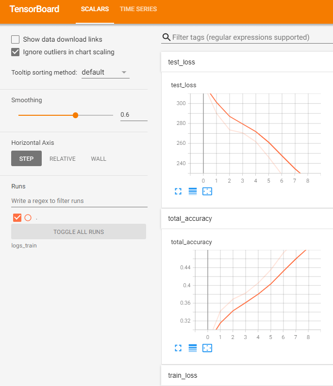
利用 GPU 训练（二）
使用 torch.device() 设置训练用的设备：device = torch.device('cuda' if torch.cuda.is_available() else 'cpu')
如果有多个 gpu，可以用cuda:0 指定 0 号 gpu 等。
将模型放到相应设备上训练：
myClass = myClass.to(device) 模型
loss_fn = loss_fn.to(device) 损失函数
for data in train_dataloader:
imgs, targets = data
imgs = imgs.to(device)
targets = targets.to(device)
1 2 3 4 5 6 7 8 9 10 11 12 13 14 15 16 17 18 19 20 21 22 23 24 25 26 27 28 29 30 31 32 33 34 35 36 37 38 39 40 41 42 43 44 45 46 47 48 49
读入测试图片：
1 2 3 4 5 6 7 8 image_path = '../imgs/dog.png' open (image_path)'RGB' )32 , 32 )),print (image.shape)
读入已经训练好的模型，map_location=torch.device('cpu')让在 cuda 上训练的模型也可以在 cpu 中测试，否则会报错：
1 2 model = torch.load("myClass_0.pth" , map_location=torch.device('cpu' ))print (model)
输出预期结果：
1 2 3 4 5 6 image = torch.reshape(image, (1 , 3 , 32 , 32 ))eval ()with torch.no_grad():print (output)print (output.argmax(1 ))
1 2 3 tensor([[-2.7974, -0.1087, 0.5627, 1.2185, 1.4736, 1.4348, 2.3175, 1.3776,
看看开源项目
看说明文档 README.md，一般 train.py 可以用来训练：
训练一般有参数：【Python】Parser 通常用法 - 知乎 (zhihu.com)